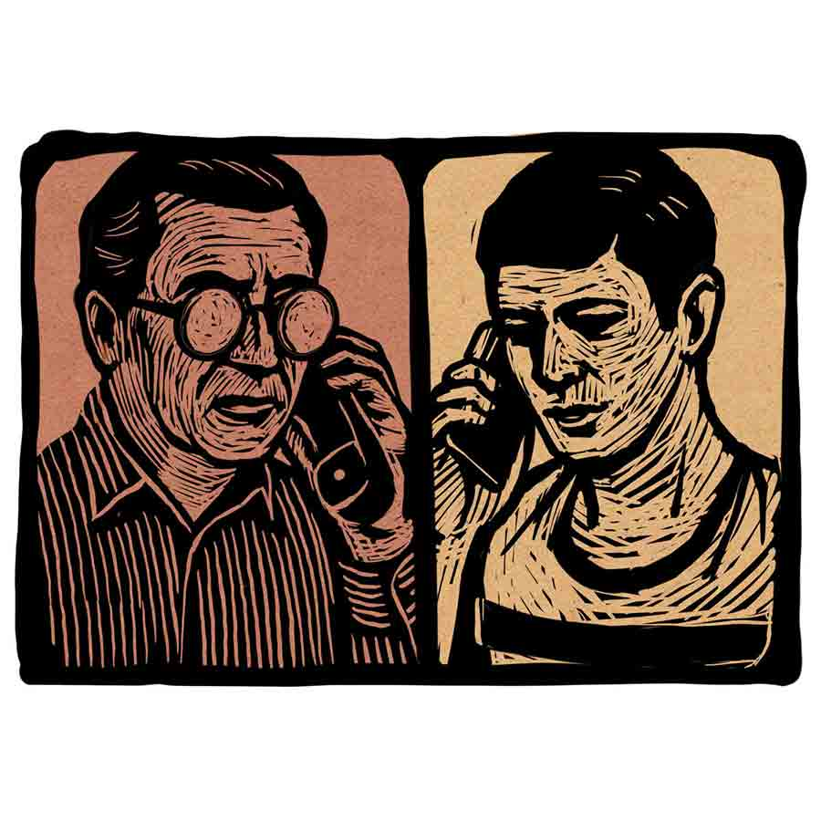

কথায় কথায়
প্রতাপ কোনার
হ্যালো।”
“উত্তমবাবু বলছেন?”
“উত্তম! কোন উত্তম?”
“কোন উত্তম মানে? আপনি কি উত্তমকাঁড়ার নন?”
“আজ্ঞে আমি সে-ই বটে।”
“আপনি যদি সে-ই, তবে ‘কোন উত্তম’ ‘কোন উত্তম’ করছেন কেন?”
“বুঝতে পারেননি, না?”
“না, পারিনি।”
“আসলে আমার সারনেমটা অনেকে ঠিকঠাক উচ্চারণ করতে পারে না। উত্তম কাঁড়ারের জায়গায় উত্তমকুমারকে চেয়ে ফেলে। আর তখন, বুঝলেন কিনা, আমিও বুঝে উঠতে পারি না— আজ কত বছর আগে টালিগঞ্জ ফিল্ম ইন্ডাস্ট্রিকে অনাথ করে চলে যাওয়া মহানায়ককে ফোন করে তারা কী বলতে চায়। তাই ভাবলাম...”
“কী ভাবলেন?”
“ভাবলাম, আপনারও যদি মহানায়কের সঙ্গে কথা বলার পরিকল্পনা থেকে থাকে...”
“দূর মশাই! আমি কি গাড়ল যে, আমি সেই উত্তমের সঙ্গে কথা বলতে চাইব?”
“কী করে বলি, বলুন? মোবাইলে কথা শুনে কি আর মানুষ চেনা যায়?”
“মোবাইলে কথা শুনে মানুষ চেনা না-হয় না-ই গেল, কিন্তু যে নম্বর থেকে আপনার মোবাইলে ফোনটা গেছে— সেটাও কি আপনার অচেনা বলে মনে হচ্ছে?”
“তা তো বলিনি। এটা তো আমাদের অফিসের ল্যান্ডলাইন নম্বর।”
“ও, সেটা চিনতে পেরেছেন, আর সেই নম্বর থেকে যে মানুষটা কথা বলছে— তাকে চিনতে অসুবিধে হচ্ছে?”
“সত্যি বলতে, তা কিঞ্চিৎ হচ্ছে বটে। আমাদের অফিসে তো আর এক জন লোক কাজ করে না যে, ওই নম্বর থেকে ফোন এলেই বুঝতে হবে সে-ই ফোন করেছে।”
“আমাকে সত্যিই আপনি চিনতে পারছেন না?”
“‘না’ বললে মিথ্যে বলা হবে। মনে তো হচ্ছে মিস্টার সোমনাথ শাসমল— আমার ঊর্ধ্বতন অফিসার— যার দোর্দণ্ডপ্রতাপ কণ্ঠস্বর অফিসে আমাকে প্রায়ই শুনতে হয়। যাকে আমি নামে চিনি, চেয়ারে চিনি, কিন্তু মনে চিনি না।”
“মন! আশ্চর্য! মনের কথা এখানে আসছে কোথা থেকে?”
“মানুষের মনটাই তো মানুষকে চেনায়। বাইরের চেহারা দেখে কি আর কারও সম্বন্ধে কিছু বোঝা যায়? আপনিই বলুন।”
“যত সব ফালতু কথা! আপনি যদি আমার গলা শুনে আমাকে চিনেই থাকেন, তা হলে এত ক্ষণ ও রকম ন্যাকামি করছিলেন কেন?”
“এই যে শব্দটি আপনি এইমাত্র প্রয়োগ করলেন— ‘ন্যাকামি’— এইটি শোনার পর আমি নিশ্চিত হলাম যে, এটি আদি অকৃত্রিম আপনিই।... এআই বোঝেন?”
“মানে! কী বলতে চাইছেন!”
“এআই-এর ফুল ফর্ম হল আর্টিফিশিয়াল ইনটেলিজেন্স, যার সাহায্যে শুধু আপনার গলা কেন— উত্তমকুমারের গলার ফিল্মি ডায়ালগ কিংবা কিশোরকুমারের গলার গানও হুবহু শুনিয়ে দেওয়া যায়। দিনকাল তো ভাল নয়। কী করে বুঝব, আপনার নকল কণ্ঠ শুনিয়ে কেউ আমাকে ফাঁসাতে চাইছে কি না। তবে ‘ন্যাকামি’ কথাটা এআইবোধহয় নিজে থেকে ব্যবহার করতে পারে না। বুঝলেন মশাই?”
“‘মশাই’! আপনি আমাকে ‘মশাই’ বলছেন! মিনিমাম অফিশিয়াল ডেকোরামটুকুও মেনটেন করতে পারেন না!”
“অফিসে কি আমি আপনাকে ‘স্যর’ বলি না?”
“অফিসের মধ্যে সেটা আপনি বলেন। কিন্তু আপনি অফিসের বাইরে থাকলে আমি কি আপনার ইয়ার-দোস্ত হয়ে যাই?”
“খেপেছেন? অফিসের বসের সঙ্গে কি কারও কখনও দোস্তি হয়? ওখানে তো শুধুই দেওয়া-নেওয়ার সম্পর্ক। তবে কিনা, ‘স্যর’-এরবাংলা প্রতিশব্দ যে ‘মহাশয়’ এবং কথ্য ভাষায় সেটি ‘মশাই’— নিতান্তই তুচ্ছ এই বিষয়টা আপনার জানা না থাকলে আমি নাচার।অবিশ্যি খানিক আগে আপনিও আমাকে বাংলায় ‘স্যর’ বলেছেন।”
“আমি আপনাকে ‘স্যর’ বলেছি?”
“সে কথা তো বলিনি। বলেছি আপনি আমাকে বাংলায় ‘স্যর’— মানে ‘মশাই’ বলেছেন। ওই যখন নিজেকে ‘গাড়ল’ না কী যেন একটা বললেন।”
“আপনি তো মশাই আচ্ছা লোক! আমি নিজেকে ‘গাড়ল’ বললাম কখন? আমার কথার মানেটাও বুঝতে পারলেন না আপনি?”
“আজ্ঞে আমি বেসিক্যালি একটু মাথামোটা— সে তো আপনি জানেন। অফিসের অনেককে বলেওছেন কথাটা, তাই না? যাই হোক, আপনি আমাকে আরও এক বার ‘মশাই’ বললেন, খুশি হলাম। হোক না বাংলা— ‘স্যর’ তো বটে।”
“আপনার সঙ্গে কথা বলা মানে একেবারে ওয়েস্টেজ অব টাইম।”
“নিজের মূল্যবান সময় নষ্ট হচ্ছে জেনেও আপনি আমার সঙ্গে কথা বলে চলেছেন। আপনি স্যর কী মহান!”
“উফ! ডিসগাস্টিং!... যাক্ গে, কাজের কথায় আসি, আপনি আজ ছুটি নিয়েছেন?”
“অফিসে তো যাইনি আজ।”
“সেটা আমি জানি। প্রায়র পারমিশন না নিয়ে হঠাৎ ছুটি নিলেন কেন?”
“দয়া করে অমন কড়া গলায় কথা বলবেন না স্যর। ছোটবেলায় আমার এক বার বেরিবেরি হয়েছিল। সেই থেকে কড়া কথা শুনলে আমারমাথা ঝিমঝিম করে, কান কটকট করে, হাত-পা লটপট করে...”
“বাজে কথা রাখুন! আগে থেকে অফিসে কোনও কিছু না জানিয়ে, ছুটির অ্যাপ্লাই না করে, কামাই করলেন কেন, সেটা বলুন।”
“তা যদি বলেন, আমার আজকের কামাইটা আর হল কোথায় স্যর?”
“তার মানে!”
“মানে আর কী? না বলে ছুটি নিলাম, আমার আজকের বেতনটা কি আর দেবেন আপনি? তাহলে তো আমি আজ পয়সাকড়ি কিছুই কামাতে পারলাম না— মানে আজ আমার কোনও কামাই হল না, তাই না?”
“আরে মহা মুশকিল! আমি কামাই, মানে আর্নিং-এর কথা বলিনি। আমি বলছি কামাই, মানে অ্যাবসেন্ট হওয়ার কথা।”
“অ। এত ক্ষণে বুঝলাম।”
“অফিস যে-হেতু আপনাকে স্যালারি দেয়, তাই যখন-তখন অ্যাবসেন্ট না হয়ে অফিসকে ঠিকঠাক সার্ভিস দেওয়াটা কি আপনার কর্তব্য নয়?”
হ্যালো।”
“উত্তমবাবু বলছেন?”
“উত্তম! কোন উত্তম?”
“কোন উত্তম মানে? আপনি কি উত্তমকাঁড়ার নন?”
“আজ্ঞে আমি সে-ই বটে।”
“আপনি যদি সে-ই, তবে ‘কোন উত্তম’ ‘কোন উত্তম’ করছেন কেন?”
“বুঝতে পারেননি, না?”
“না, পারিনি।”
“আসলে আমার সারনেমটা অনেকে ঠিকঠাক উচ্চারণ করতে পারে না। উত্তম কাঁড়ারের জায়গায় উত্তমকুমারকে চেয়ে ফেলে। আর তখন, বুঝলেন কিনা, আমিও বুঝে উঠতে পারি না— আজ কত বছর আগে টালিগঞ্জ ফিল্ম ইন্ডাস্ট্রিকে অনাথ করে চলে যাওয়া মহানায়ককে ফোন করে তারা কী বলতে চায়। তাই ভাবলাম...”
“কী ভাবলেন?”
“ভাবলাম, আপনারও যদি মহানায়কের সঙ্গে কথা বলার পরিকল্পনা থেকে থাকে...”
“দূর মশাই! আমি কি গাড়ল যে, আমি সেই উত্তমের সঙ্গে কথা বলতে চাইব?”
“কী করে বলি, বলুন? মোবাইলে কথা শুনে কি আর মানুষ চেনা যায়?”
“মোবাইলে কথা শুনে মানুষ চেনা না-হয় না-ই গেল, কিন্তু যে নম্বর থেকে আপনার মোবাইলে ফোনটা গেছে— সেটাও কি আপনার অচেনা বলে মনে হচ্ছে?”
“তা তো বলিনি। এটা তো আমাদের অফিসের ল্যান্ডলাইন নম্বর।”
“ও, সেটা চিনতে পেরেছেন, আর সেই নম্বর থেকে যে মানুষটা কথা বলছে— তাকে চিনতে অসুবিধে হচ্ছে?”
“সত্যি বলতে, তা কিঞ্চিৎ হচ্ছে বটে। আমাদের অফিসে তো আর এক জন লোক কাজ করে না যে, ওই নম্বর থেকে ফোন এলেই বুঝতে হবে সে-ই ফোন করেছে।”
“আমাকে সত্যিই আপনি চিনতে পারছেন না?”
“‘না’ বললে মিথ্যে বলা হবে। মনে তো হচ্ছে মিস্টার সোমনাথ শাসমল— আমার ঊর্ধ্বতন অফিসার— যার দোর্দণ্ডপ্রতাপ কণ্ঠস্বর অফিসে আমাকে প্রায়ই শুনতে হয়। যাকে আমি নামে চিনি, চেয়ারে চিনি, কিন্তু মনে চিনি না।”
“মন! আশ্চর্য! মনের কথা এখানে আসছে কোথা থেকে?”
“মানুষের মনটাই তো মানুষকে চেনায়। বাইরের চেহারা দেখে কি আর কারও সম্বন্ধে কিছু বোঝা যায়? আপনিই বলুন।”
“যত সব ফালতু কথা! আপনি যদি আমার গলা শুনে আমাকে চিনেই থাকেন, তা হলে এত ক্ষণ ও রকম ন্যাকামি করছিলেন কেন?”
“এই যে শব্দটি আপনি এইমাত্র প্রয়োগ করলেন— ‘ন্যাকামি’— এইটি শোনার পর আমি নিশ্চিত হলাম যে, এটি আদি অকৃত্রিম আপনিই।... এআই বোঝেন?”
“মানে! কী বলতে চাইছেন!”
“এআই-এর ফুল ফর্ম হল আর্টিফিশিয়াল ইনটেলিজেন্স, যার সাহায্যে শুধু আপনার গলা কেন— উত্তমকুমারের গলার ফিল্মি ডায়ালগ কিংবা কিশোরকুমারের গলার গানও হুবহু শুনিয়ে দেওয়া যায়। দিনকাল তো ভাল নয়। কী করে বুঝব, আপনার নকল কণ্ঠ শুনিয়ে কেউ আমাকে ফাঁসাতে চাইছে কি না। তবে ‘ন্যাকামি’ কথাটা এআইবোধহয় নিজে থেকে ব্যবহার করতে পারে না। বুঝলেন মশাই?”
“‘মশাই’! আপনি আমাকে ‘মশাই’ বলছেন! মিনিমাম অফিশিয়াল ডেকোরামটুকুও মেনটেন করতে পারেন না!”
“অফিসে কি আমি আপনাকে ‘স্যর’ বলি না?”
“অফিসের মধ্যে সেটা আপনি বলেন। কিন্তু আপনি অফিসের বাইরে থাকলে আমি কি আপনার ইয়ার-দোস্ত হয়ে যাই?”
“খেপেছেন? অফিসের বসের সঙ্গে কি কারও কখনও দোস্তি হয়? ওখানে তো শুধুই দেওয়া-নেওয়ার সম্পর্ক। তবে কিনা, ‘স্যর’-এরবাংলা প্রতিশব্দ যে ‘মহাশয়’ এবং কথ্য ভাষায় সেটি ‘মশাই’— নিতান্তই তুচ্ছ এই বিষয়টা আপনার জানা না থাকলে আমি নাচার।অবিশ্যি খানিক আগে আপনিও আমাকে বাংলায় ‘স্যর’ বলেছেন।”
“আমি আপনাকে ‘স্যর’ বলেছি?”
“সে কথা তো বলিনি। বলেছি আপনি আমাকে বাংলায় ‘স্যর’— মানে ‘মশাই’ বলেছেন। ওই যখন নিজেকে ‘গাড়ল’ না কী যেন একটা বললেন।”
“আপনি তো মশাই আচ্ছা লোক! আমি নিজেকে ‘গাড়ল’ বললাম কখন? আমার কথার মানেটাও বুঝতে পারলেন না আপনি?”
“আজ্ঞে আমি বেসিক্যালি একটু মাথামোটা— সে তো আপনি জানেন। অফিসের অনেককে বলেওছেন কথাটা, তাই না? যাই হোক, আপনি আমাকে আরও এক বার ‘মশাই’ বললেন, খুশি হলাম। হোক না বাংলা— ‘স্যর’ তো বটে।”
“আপনার সঙ্গে কথা বলা মানে একেবারে ওয়েস্টেজ অব টাইম।”
“নিজের মূল্যবান সময় নষ্ট হচ্ছে জেনেও আপনি আমার সঙ্গে কথা বলে চলেছেন। আপনি স্যর কী মহান!”
“উফ! ডিসগাস্টিং!... যাক্ গে, কাজের কথায় আসি, আপনি আজ ছুটি নিয়েছেন?”
“অফিসে তো যাইনি আজ।”
“সেটা আমি জানি। প্রায়র পারমিশন না নিয়ে হঠাৎ ছুটি নিলেন কেন?”
“দয়া করে অমন কড়া গলায় কথা বলবেন না স্যর। ছোটবেলায় আমার এক বার বেরিবেরি হয়েছিল। সেই থেকে কড়া কথা শুনলে আমারমাথা ঝিমঝিম করে, কান কটকট করে, হাত-পা লটপট করে...”
“বাজে কথা রাখুন! আগে থেকে অফিসে কোনও কিছু না জানিয়ে, ছুটির অ্যাপ্লাই না করে, কামাই করলেন কেন, সেটা বলুন।”
“তা যদি বলেন, আমার আজকের কামাইটা আর হল কোথায় স্যর?”
“তার মানে!”
“মানে আর কী? না বলে ছুটি নিলাম, আমার আজকের বেতনটা কি আর দেবেন আপনি? তাহলে তো আমি আজ পয়সাকড়ি কিছুই কামাতে পারলাম না— মানে আজ আমার কোনও কামাই হল না, তাই না?”
“আরে মহা মুশকিল! আমি কামাই, মানে আর্নিং-এর কথা বলিনি। আমি বলছি কামাই, মানে অ্যাবসেন্ট হওয়ার কথা।”
“অ। এত ক্ষণে বুঝলাম।”
“অফিস যে-হেতু আপনাকে স্যালারি দেয়, তাই যখন-তখন অ্যাবসেন্ট না হয়ে অফিসকে ঠিকঠাক সার্ভিস দেওয়াটা কি আপনার কর্তব্য নয়?”
“ঠিকই তো, বৃদ্ধ অসহায় বাবা-মায়ের দেখাশোনা করা যেমন সন্তানের কর্তব্য।”
“এই কথাটা কোন প্রসঙ্গে এল?”
“ওটা স্যর কথার কথা। বাবা-মা সন্তানকে পৃথিবীতে এনে তাকে মানুষের মতো মানুষ করে গড়ে তোলেন, সমাজে প্রতিষ্ঠিত করেন। তার বিনিময়ে অথর্ব, অসহায় বাবা-মায়ের দায়িত্ব সন্তানের গ্রহণ করা কর্তব্য। যেমন অফিসকে আমরা সার্ভিস দিই, অফিসকে আরও বড়, আরও লাভজনক করে তোলার জন্যে— তাইঅফিস আমাদের বেতন দিয়ে তার কর্তব্য পালন করে। তাই না স্যর?”
“উত্তমবাবু, তখন থেকে আপনি কিন্তু আলতুফালতু বকে যাচ্ছেন। আসল কথাটায় কিছুতেই আসছেন না।”
“সারা দিন এত কথা শুনতে হয় আর বলতে হয় যে, তার মধ্যে কোনটা আসল আর কোনটা নকল, বুঝতেই পারি না।... ‘আসল কথা’ বলতে আপনি কোন কথাটা বলছেন, স্যর?”
“আপনি-আজ-হঠাৎ-ছুটি-নিলেন-কেন?”
“আপনি অমন দাঁতে দাঁত চেপে কথা বলছেন কেন স্যর? বললাম না ছেলেবেলায় আমার বেরিবেরি হয়েছিল...”
“উইল ইউ প্লিজ় শাট আপ!”
“ও রকম জোরে চেঁচাবেন না স্যর। আমি ‘শাট আপ’ হয়ে গেলে আপনি বুঝবেন কী ভাবে, আমি আজ অ্যাবসেন্ট কেন?”
“বেশ, তা হলে দয়া করে সেটা বলে ধন্যকরুন আমাকে।”
“আজকে স্যর শ্মশানে আসতে হল বলে অফিসে আসাটা আর হল না।”
“শ্মশানে! কেন?”
“আমি যখন মারা যাব, তখন যে চিতাটায় আমাকে দাহ করা হবে— সেটা আগে থেকে বুক করতে এসেছি।”
“কী উল্টোপাল্টা বকছেন?”
“শ্মশানে মানুষকে কেন আসতে হয়, সেটা যদি আপনার জানা না থাকে, আমি আর কী-ই বা করতে পারি, স্যর?”
“আপনি তো জানেন অফিসে আজ কাজের চাপ খুব বেশি। জিএম সাহেব যে আজ আসছেন, সেটাও আপনার অজানা নয়। গতকাল এ নিয়ে আপনার সঙ্গে আমার কথাও হয়েছিল। তাই হঠাৎ করে এমন ছুটি নেওয়াটা...”
“খুব সত্যি কথা। যিনি গত হয়েছেন, তিনি যদি দু’-এক দিন আগে আমাকে বলে রাখতেন যে, আজই তিনি দেহ রাখবেন, তা হলে আজকের ছুটিটা আমি আগাম নিয়ে রাখতে পারতাম, আর আপনিও জিএম সাহেবকে এক দিন পরে আসার অনুরোধ করতে পারতেন।”
“কী ব্যাপার বলুন তো উত্তমবাবু? আজ আপনি কেমন যেন অন্য রকম ভাবে কথা বলছেন।”
“বললে বিশ্বাস করবেন না স্যর, আমারও কিন্তু ঠিক তেমনটাই মনে হচ্ছে। কিছু মনে করবেন না স্যর, কারণটা আমারও জানা নেই।”
“যিনি মারা গিয়েছেন, তিনি কি আপনার পরিচিত কেউ?”
“মারা গিয়েছেন বাবা। তিনি আমার খুবই পরিচিত ছিলেন।”
“আপনার বাবা! কিন্তু আমার যত দূর মনে পড়ছে, অফিস রেকর্ডে আপনার বাবার নামের আগে ‘লেট’ কথাটা রয়েছে। তা হলে আপনার মৃত বাবা আবার মারা গেলেন কী করে? আর কারও বাবা যে তার পরিচিত, সেটা এমন করে ঢাক পিটিয়ে বলারই বা কী আছে? এটাই তো স্বাভাবিক।”
“আমি তো বলিনি আমার নিজের বাবা মারা গিয়েছেন। আর পরিচয়ের কথা বলছেন? আমরা পাশাপাশি থেকেও কাকে কতটা চিনতেপারি, বলুন?”
“তার মানে!”
“মানেটা খুব সহজ। এই যে আমি আপনার সঙ্গে একই অফিসে এত দিন ধরে কাজ করছি— আমি কি আজ অবধি আপনাকে ঠিকঠাক চিনে উঠতে পেরেছি, না কি আপনি আমাকে?”
“আবার ফালতু বকছেন!... কার বাবা মারা গিয়েছেন? আপনার কোনও বন্ধুর, না আত্মীয়ের?”
“গত হয়েছেন এক পুত্রের পিতা।”
“পিতার অস্তিত্ব না থাকলে যে পুত্রের পক্ষে পৃথিবীর আলো দেখাটাই সম্ভব নয়— সেটা আমি জানি। সব পিতাই কোনও না কোনও সন্তানের পিতা। এটা সবাই জানে।”
“আপনার মতো ইনটেলিজেন্ট পার্সন যে সেটা জানেন, তা আমিও জানি।... আচ্ছা, আপনি শ্রীরামপুরের ‘শান্তি আশ্রম’ চেনেন?”
“শ্রীরামপুরে আপনার বাড়ি, আমার নয়। তাই সেখানে কোথায় কী আছে না আছে, তার ডিটেলসও আমার জানার কথা নয়।”
“তা অবশ্য ঠিক। কথাটা বলা বোধহয় আমার ঠিক হয়নি, না?”
“আমারও সেটাই মনে হয়। কিন্তু শ্রীরামপুরের ‘শান্তি আশ্রম’ ব্যাপারটা কী? এখানে এখন কী প্রসঙ্গে এল কথাটা?”
“এই দেখুন। বাবা না থাকলে যে ছেলে পৃথিবীতে আসে না, সেটা আপনি জানেন, কিন্তু শ্রীরামপুরের ‘শান্তি আশ্রম’ নামের বৃদ্ধাশ্রমের কথাটা আপনি জানেন না।”
“সারা দুনিয়ার কোথায় কোন বৃদ্ধাশ্রম আছে সেটা কি আমার পক্ষে জানা সম্ভব, না কি বৃদ্ধাশ্রমে আশ্রয় নেওয়ার বয়সে আমি পৌঁছে গেছি?”
“জানি স্যর, আপনার চাকরিজীবন শেষ হতে এখনও এগারো বছর বাকি। তবে কী জানেন, আপনার-আমার মতো কমবয়সিদেরও কখনও কখনও বৃদ্ধাশ্রমে পা রাখতে হয় বোঝা হালকা করার জন্যে।”
“তার মানে! কী বলতে চাইছেন আপনি?”
“জানেন স্যর, খুব ছোটবেলায় মা-বাবাকে হারিয়েছি তো, তাই যখনই আমার স্কুলের বন্ধুদের সঙ্গে তাদের মা-বাবাকে দেখতাম, আমার বুকের মধ্যে যে কেমন কষ্ট হত, তা আমি আপনাকে বলে বোঝাতে পারব না।”
“আপনার কষ্টের কথা আমার বুঝে লাভটা কী?”
“একদম ঠিক বলেছেন স্যর। যাতে আপনার কোনও লাভ নেই, তাতে আপনার কোনও ইন্টারেস্ট থাকারও কথা নয়। কী জানেন স্যর, ওই ‘শান্তি আশ্রম’-এ আমার এক বন্ধুর সঙ্গে আমাকে এক বার যেতে হয়েছিল। মা আর ছেলে থাকত শ্রীরামপুরে গঙ্গার ধারে একটা ফ্ল্যাটে। ওর অফিস হঠাৎই ওকে বদলি করে দিল জবলপুরে। তাই বাধ্য হয়ে ওকে আসতে হয়েছিল ওই বৃদ্ধাশ্রমে। ফ্ল্যাটে তো মাকে একা রেখে যেতে পারে না, আর অত দূর থেকে যখন-তখন মাকে দেখতে আসাটাও ওর পক্ষে সম্ভব নয়। তাই ‘শান্তি আশ্রম’-এ মাসিমার সঙ্গে যোগাযোগ রাখার দায়িত্বটা আমিই নিয়েছিলাম। প্রায়ই ওখানে যাই আমি। আমার বন্ধুও মোবাইলে নিয়মিত যোগাযোগ রাখে ওর মায়ের সঙ্গে। ‘শান্তি আশ্রম’-এ প্রতি মাসে মাসিমার খরচটাও পাঠিয়ে দেয়। অনেকে আবার এককালীন টাকাও দিয়ে দেয়। সে ক্ষেত্রে আশ্রমের সঙ্গে কিংবা মা-বাবারসঙ্গে মাঝে মাঝে যোগাযোগ করার ঝামেলাটা আর থাকে না।”
“আপনি আমাকে এ সব শোনাচ্ছেন কেন?”
“আপনাকে শোনাচ্ছি না তো। আমি বলছি বলে আপনি শুনছেন, যেমন অফিসে আপনি বলেন— আমি শুনি। যাকগে, যা বলছিলাম... ‘শান্তি আশ্রম’-এ নিয়মিত যেতে যেতে আমি এত বাবা-মা পেয়ে গেলাম যে, ছেলেবেলায় নিজের বাবা-মাকে হারানোর দুঃখটা এখন অনেক কমে গিয়েছে, জানেন। ওখানে আশ্রমিক সবাইকেই আমি বাবা কিংবা মা বলেই ডাকি।”
“আপনার তো তা হলে অনেক বাবা, অনেক মা— অ্যাঁ! দারুণ ব্যাপার তো!”
“হাসছেন স্যর? তা হাসতে আপনি পারেন। নির্দায়, নির্ঝঞ্ঝাট মানুষ, হাসবেন না-ই বা কেন?... জানেন স্যর, ওখানে আমার এক বাবার একমাত্র ছেলেটি তার মায়ের মৃত্যুর পর আশ্রমকে এককালীন অনেক টাকা দিয়ে নিজের বাবাকে চার বছর আগে ওখানে ফেলে রেখে গিয়েছিল। তার পর আর কখনও দেখতেও আসেনি— বাবা বেঁচে আছে না মরে গেছে। বৃদ্ধাশ্রমের নামটাও মনে হয় ভুলে মেরে দিয়েছে। আমার সেই বাবা আমার হাত ধরে মিনতি করে বলেছিলেন, তিনি মারা গেলে তাঁরঅন্ত্যেষ্টি যেন আমি করি। আশ্রম কর্তৃপক্ষকেও অনুরোধ করেছিলেন, তাঁর মৃত্যুসংবাদ যেন তাঁর ছেলেকে দেওয়া না হয়। তাঁর কথা আমি ফেলতে পারিনি, স্যর। শপথ করে তাঁকে বলেছিলাম, তাঁর কথা আমি রাখব। তাঁকে দেওয়া সেই কথা রাখতেই আজ আমাকে শ্মশানে যেতে হয়েছিল।... কিন্তু আপনার জেরার চোটে আর বোধ হয় তাঁর কথা রাখা সম্ভব হবে না। আজ ভোরবেলায় যিনিপ্রয়াত হয়েছেন, আমার সেই বাবা আদতে বরানগরের বাসিন্দা— নাম মনোরঞ্জন শাসমল।... কী হল স্যর? কথা বলছেন না যে? নামটাআপনার খুব চেনা, তাই না স্যর?... আমি যে এক বার আপনার অফিস রেকর্ড দেখেছিলাম স্যর... চুপ করে গেলেন কেন স্যর? হ্যালো... তেমন তেমন ঝামেলায় পড়লে অনেককে বলতে শুনেছি, ‘বাপের নাম ভুলিয়ে দিয়েছে’... তেমন কি সত্যি হয় স্যর? সত্যি সত্যি বাপের নাম ভুলে যায় কেউ? লাইনে আছেন স্যর?... হ্যালো... হ্যালো...”